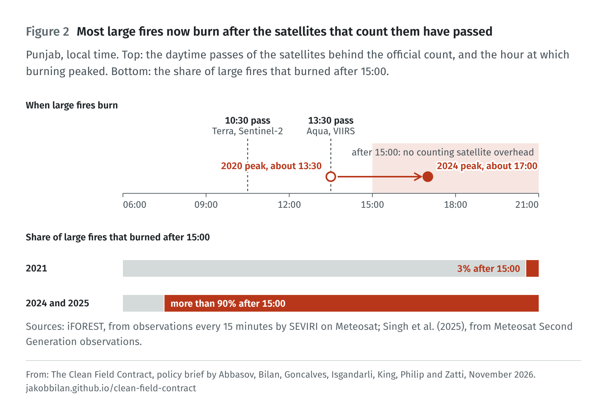

Policy brief, November 2026
A proposal to pay Punjab’s farmers for paddy fields left unburnt
Crop fires in Punjab cause 64% of India’s exposure to smoke from crop fires. Across India, that smoke was linked to between 44,000 and 98,000 early deaths a year in 2003–2019 (Lan et al. 2022). In October and November the north-westerly winds carry the smoke over Haryana and Delhi.
The official count of farm fires in Punjab fell from 71,304 in 2021 to 5,114 in 2025. Maps of burnt fields show a far smaller fall: 37% between 2022 and 2025 on iFOREST’s maps. In 2024 and 2025 more than 90% of large fires burned after 3 pm, after the satellites behind the count had passed (iFOREST 2025).
In a randomised trial with 1,668 farmers in Punjab, paying farmers not to burn raised the share with no burnt plot by 7.7 to 11.5 percentage points when a quarter or half of the money was paid up front. Paying only after verification had no measurable effect (Jack et al. 2025).

₹2,500 an acre for a field left unburnt: ₹500 at enrolment and ₹2,000 after a clean season, in full on the first 10 acres and at half the rate on acres 10 to 25. Sentinel-2 burnt-area maps, a second look from Landsat, random field checks and a 15-day appeal decide payment. Punjab pays for 2027. From 2028 the Centre pays ₹1,500 and Delhi ₹500 for each certified acre, if enrolled villages burn at least 5 percentage points less than villages still waiting.
At full scale the scheme costs about ₹755 crore of public money a year: ₹281 crore from Punjab, ₹355 crore from the Centre and ₹118 crore from Delhi. At a 10-point effect it averts about 4,300 early deaths a year, and its net present value over 2027–2036 is positive in every case we modelled, from about ₹18,000 crore to ₹1.27 lakh crore.
Full brief, sources and data: jakobbilan.github.io/clean-field-contract
Suggested citation: Abbasov, E., Bilan, J., Goncalves, T., Isgandarli, N., King, J., Philip, A. M. and Zatti, C. (2026). The Clean Field Contract: a proposal to pay Punjab’s farmers for paddy fields left unburnt. Policy brief, November 2026.
Written for the course PP425 Strategic Policymaking at the London School of Economics and Political Science. The views are the authors’ own and not those of LSE or of any government.